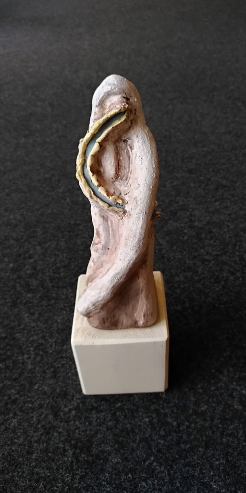
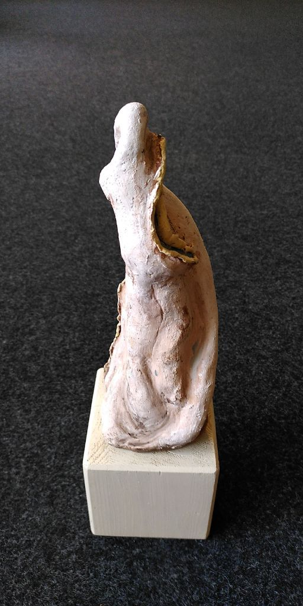
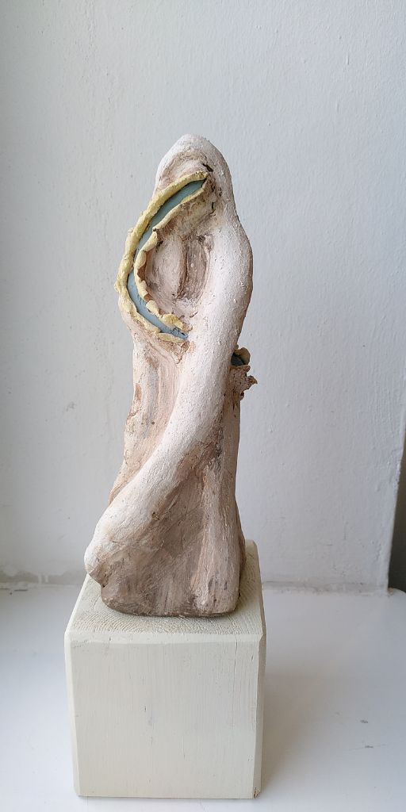
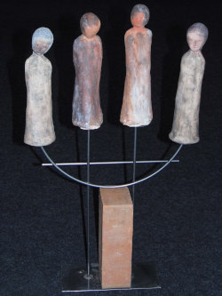
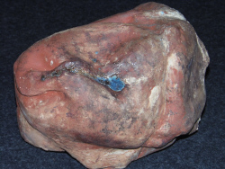
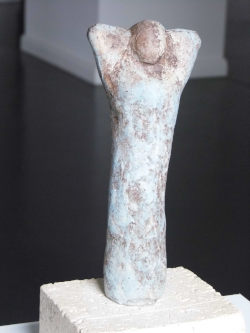

Größe: 28cm x 18cm x 18cm
VON-OBEN-HERAB lässt Christiane Burger die vier sehr menschlich wirkenden Engel wohlwollend sich allem Irdischen zuwenden. "Schutz und Begleitung wünschen wir uns von Ihnen, diesen Engel, besonders in schweren Zeiten, wie jetzt viele Menschen die Pandemie erleben", sagt die Künstlerin

Material und Technik: Keramik mit Oxyden behandelt
Größe: 42cm x 12cm x 70cm
Bläulich wie Wassertropfen schimmert die Glasur auf dieser einem großen Stein ähnlichen Skulptur, die deutlich werden lässt, dass die steten Tropfen nicht zwangsläufig alles aushöhlen müssen, sondern auch abfließen können. "So können auch wir Menschen alles 'abfließen' lassen, was belastend ist und brauchen uns nicht davon aushöhlen lassen", meint die Künstlerin dazu.

Material und Technik: Keramik mit Oxyden und Glasur behandelt
Größe: 28cm x 35cm x 27cm
Beim Anblick dieser feinen Skulptur wird deutlich, wie frei und angenehm sich ein neuer Morgen anfühlen kann.

Material und Technik: Engobenkeramik
Größe: 5cm x 9cm x 20cm
Bei diesem Torso geht es um weibliche Formen, die sich nicht von gängigen Moderichtlinien leiten lassen, sondern von der Intensität üppiger Erdverbundenheit. Dabei verschmilzt die durch Oxyde matt glänzend gewordene Oberfläche mit der direkten, naturnahen Formensprache zu einer Einheit, die einen ganz eigenen Akzent setzt.
Die menschliche Psyche bildet für diese reliefartige kleine Skulptur den Hintergrund. Da wird ein rein subjektives, momentanes Erleben des „inneren Auges“ festgehalten, und für einen Augenblick ein Stückchen Seele freigelegt.


Der Ausgangspunkt für die Skulptur „THE PROMISE“ ist das Zurückgehen in eine ursprüngliche, sinnliche Erfahrungszone, sowohl auf physischer als auch auf psychischer Ebene. Die Gebärdensprache meiner Skulptur zeigt eindeutig intensive Nähe gekoppelt mit der Sehnsucht und dem Wunsch, sich dieses Erleben gegenseitig zu versprechen, in dem Glauben es dadurch auf Dauer zu erhalten.
Besonderer Dank an die Fotografen
Christine Kaminski und Alexander Göttert
(bei Interesse mail to: ag-photography@gmx.net)